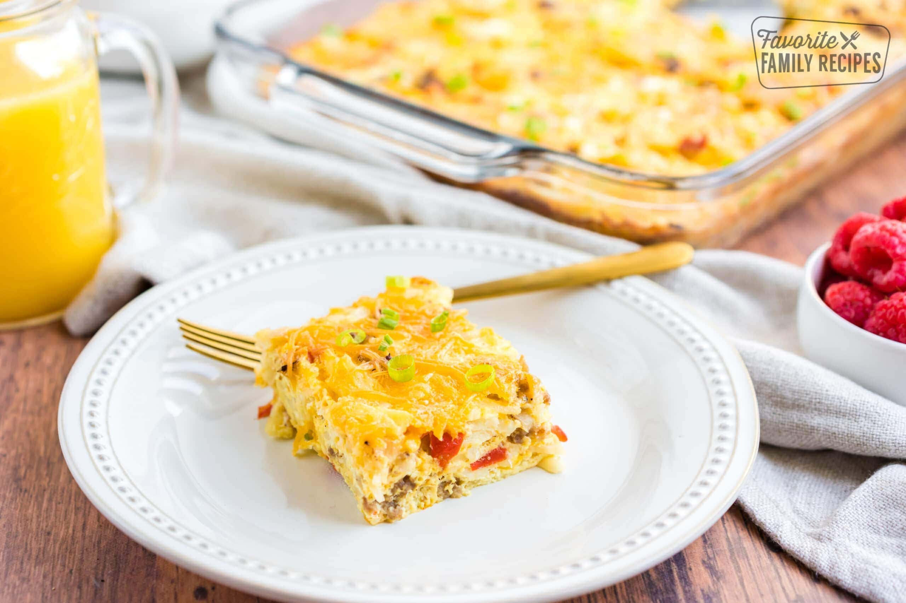

Easy Breakfast Casserole

Ingredients
- ½ pound ground sausage
- 1 red pepper diced
- 1 medium onion diced
- 1 pound hash brown potatoes frozen, shredded
- 2 cups cheddar cheese shredded
- 12 eggs
- 1 cup milk
- 1 teaspoon salt
- ½ teaspoon pepper
Preparation
- Preheat oven to 350 degrees. Heat a skillet over medium heat. Cook sausage, pepper, and onion until sausage is browned and vegetables are tender. Drain off any excess fat.
- In a large bowl, combine sausage mixture with hash browns and cheddar cheese. Pour into a greased 9×13 baking dish.
- In a separate bowl, combine eggs and milk. Whisk until fully blended. Pour over hash brown mixture.
- Bake at 350 degrees for 50-60 minutes, or until eggs are set in the center and don't jiggle.